Finance Bot
Admin Functions:
Series Related Functions:
$series {subcommand}
-
add-> use this subcommand to add a new series to the database.
$series add {#channel-mention} (TL) (PR) (CL) (TS) (QC) (SR)
example:$series add #Solo-Leveling 4 2 1.5 1.5 2
-
edit-> use this subcommand to edit the points of an existing series in the database.
$series edit {#channel-mention} (TL) (PR) (CL) (TS) (QC) (SR)
example: `$series edit #Solo-Leveling 5 3 2 2 2
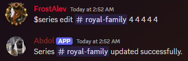 -
staff-> use this subcommand to assign members to a series & if members were already assigned to a series, it will update them.
$series staff {#channel-mention} (@TL) (@PR) (@CL) (@TS) (@QC) example:$series staff #Solo-Leveling @user1 @user2 @user3 @user3 @user4
-
delete-> use this subcommand to delete an existing series from the database.
$series delete {#channel-mention} example:$series dedlete #Solo-Leveling -
substitute-> use this command to request temporary/permanent staff to work on a chapter/s in a certain series.
Usage:
Submit a request in the #substitutes channel with the following format:
{#channel-mention} (staff_role/s) {chapters_count} {temp/perma}
example:#Solo-Leveling Translatorjobs:
Translation | Proofreading | Cleaning | Typesetting | Quality CheckingRequirements:
- The submission must be in the #substitutes channel.
- Invoker must have Manager role.

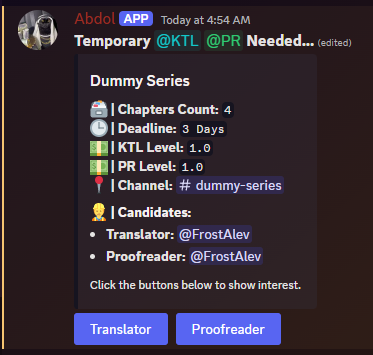
Users Related Functions:
$user/u {subcommand}
-
add/a-> use this subcommand to add a new member to the database.
$user add {@member}
example:$user add @user
example:$u add @user
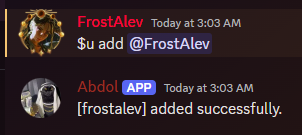 -
reward/r-> use this subcommand to reward a member by adding points.
$user reward {@member} (reward) "reason"
example:$user reward @user 2
example:$u r @user 2
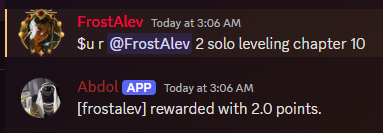 -
punish/p-> use this subcommand to punish a member by subtracting points.
$user punish {@member} (reward) "reason"
example:$user punish @user 2
example:$u p @user 2
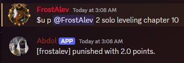 -
$leaderboard/lb-> use this command to show the month's Leaderboard.
$leaderboard {number of desired ranks}
$leaderboard 3
$leaderboard
$lb
example:$lb
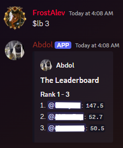 -
$point_history/ph-> use this command to show a list of the reward/punish history of a user.
$point_history {@user}
$ph @user
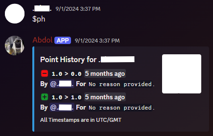 -
$reset_points-> use this command to reset all users' points and submissions.- the bot will send a CSV file with the points before the reset.
- the bot will also show a list of the users and their total points.
- only users with the role Administration can use this command.
example:$reset_points
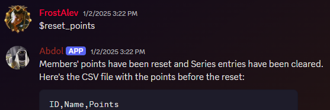
Staff Functions:
Series Related Functions:
-
$series_info/info/si-> use this command to show the info card of a series:- assigned members
- pay rates
$series_info {#channel-mention}
example:$series_info #Solo-Leveling- you can skip the channel mention if you're in the desired series channel already
- the total cost field only appear if the invoker is an admin
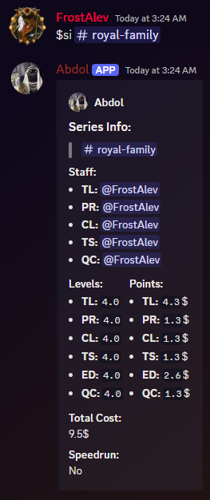
Users Related Functions:
-
$status/s-> use this command to show the user's status card.
$status {@user-mention}
$status @user
example:$s @user
you can skip the user mention if you wanna see your own status
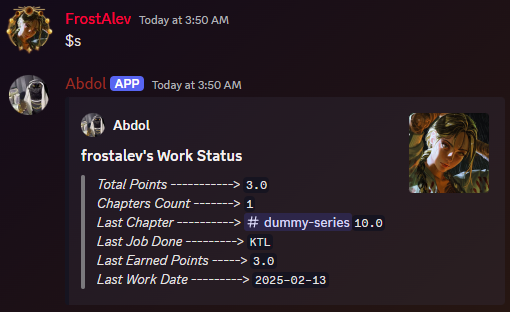 -
$user_chapters/uc-> use this command to list the user's submitted chapters.
$user_chapters {@user-mention}
$user_chapters @user
$uc @user
$uc
example:$uc @user
you can skip the user mention if you wanna see your own chapters
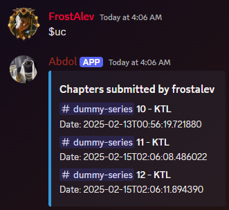 -
$leaderboard/lb-> use this command to show the month's Leaderboard.
$leaderboard
$lb
example:$lb
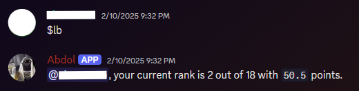
the staff variant of the leaderboard command only shows info relevant to the invoker
Chapter Submission Related Functions:
Usage:
Submit your work in the #submissions channel with the following format:
{#channel-mention} (chapter number) (job)
example: #Solo-Leveling 23 Typesetting
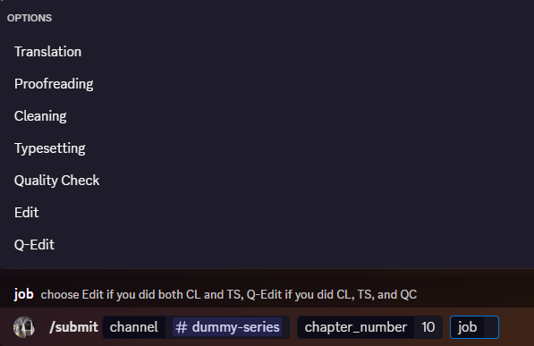
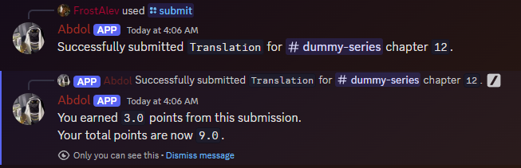
Sheets:
Staff Points Sheet:
-
Points Ledger
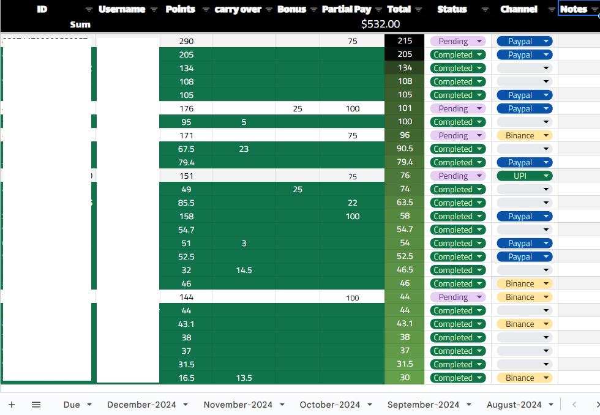 -
Overall Points
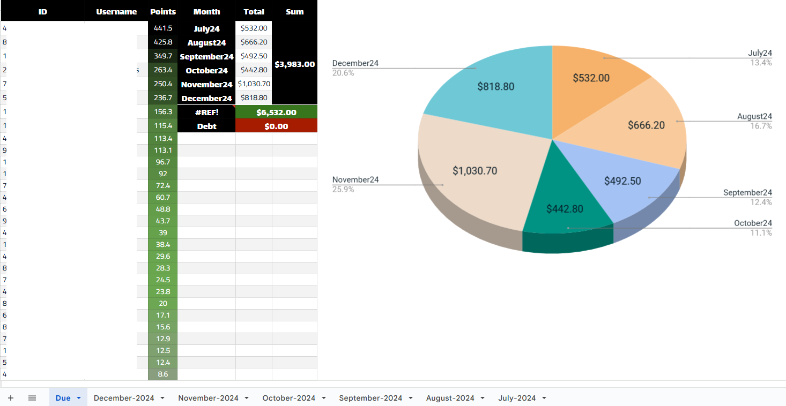
Series Levels Sheet:
-
Tasks Levels Sheet
Fill in few info about the series and the sheet will calculate the level and pay rate automatically
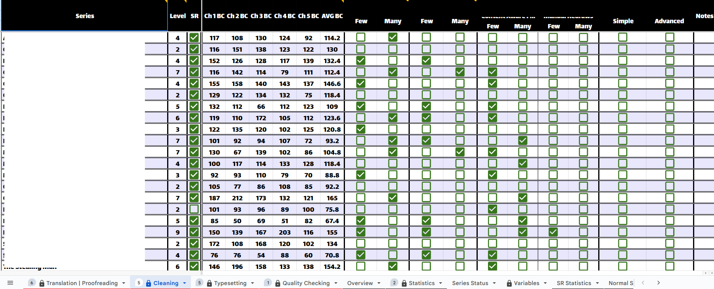 -
Series Overview Sheet
Automatically shows all info about all series in one worksheet ready to copy over to the bot
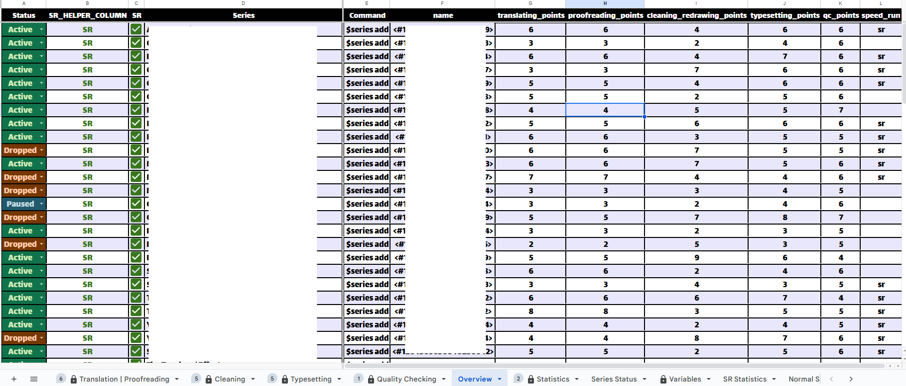 -
Statistics Sheet
Automatically calculates the operation cost and projected costs based on all the data in the other worksheets and algorithms
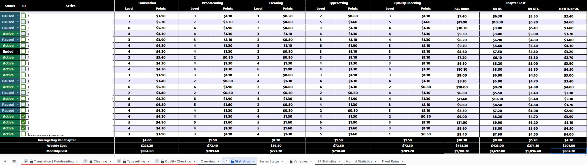
Progress Bot
-
Record your progress
#channel-name / chapter-number/s / step / comments, links, mentions, etc...
Steps are:raw,tl,pr,cl,ts,qc
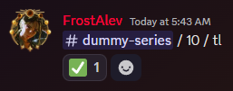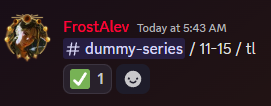 -
%undo/u-> unregisters a chapter if sent by mistake.
#channel-name / chapter-number / step
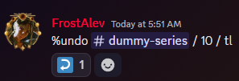 -
%prog/p-> Show the progress report for a series.
you can skip the channel mention to get the progress of the current channel.
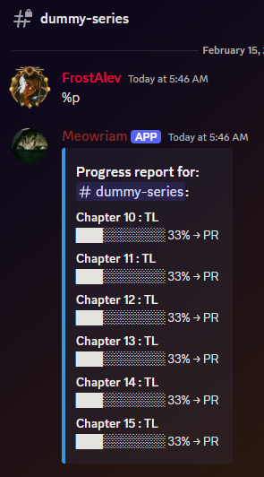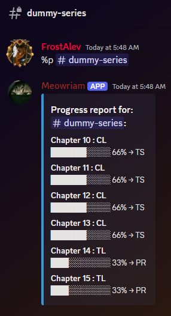 -
%overview/o-> Show the progress report for all series in a category. (Managers only)
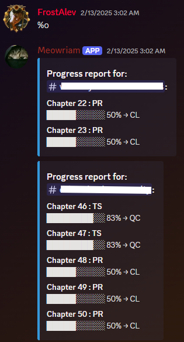 -
/mention-> Use this function to mention user/s based two or more roles they have without mass pinging the whole role holders.
Usage:
/mentions {include_role/s} {exclude_role/s} {hiatus_status}Use Case:
Task: mention the translator of solo-leveling who's not on hiatus without knowing him.
Basic Solution 1: ping the @solo-leveling role and ask who's the translator.
Basic Solution 2: ping the @KTL role in the#Solo-Levelingchannel and ask who's the current translator.
mention command: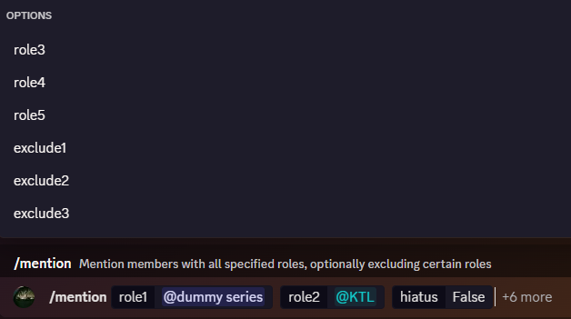
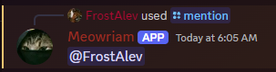 -
%arrange-> use to arrange series channels in a given category based on several methods default being name length
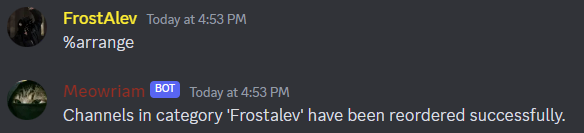
Channel Management Bot
- Create a new channel for a new series
/create_channel {channel_name} {release_day} {release_time} {raw_source} {priority} {korean_name}
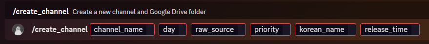
the bot then creates a new channel in a certain category based on the series name and day of release given in the command, and adds all the miscellaneous info in the Channel Topic and the creates a role with the same name of the channel and configures the permissions for both the role and the channel. then creates a new folder in a given Google Drive account with the following scheme:
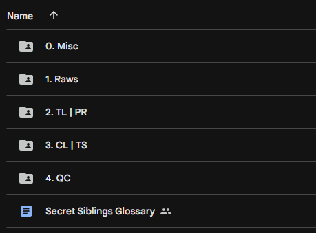
then pins that google drive link in the series discord channel
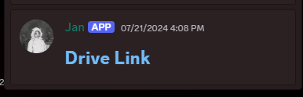